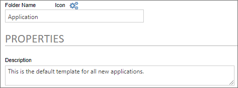
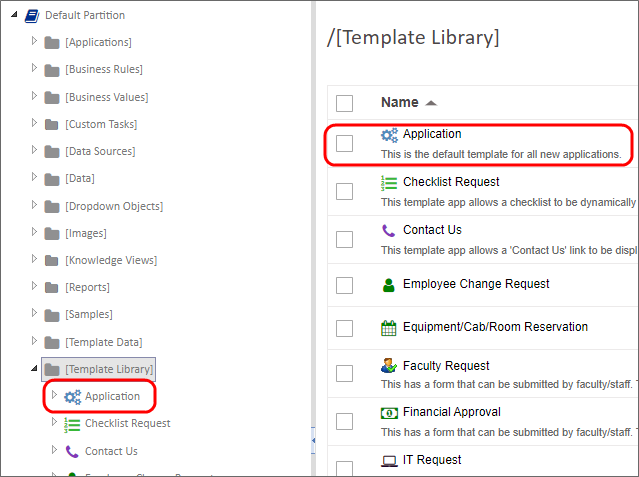
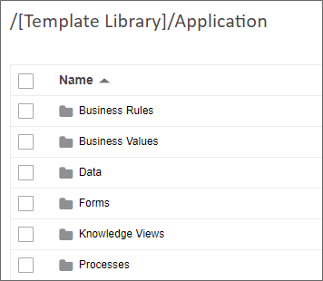
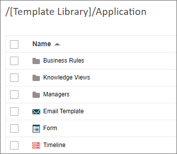
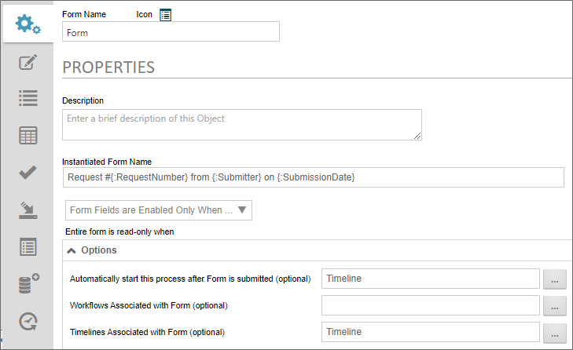
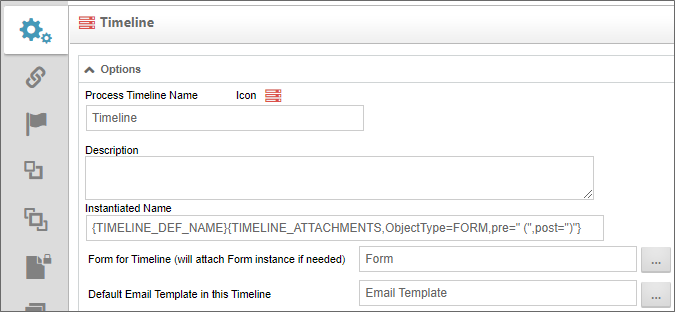
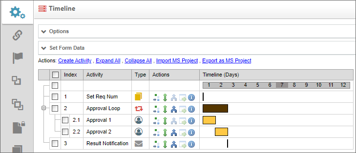
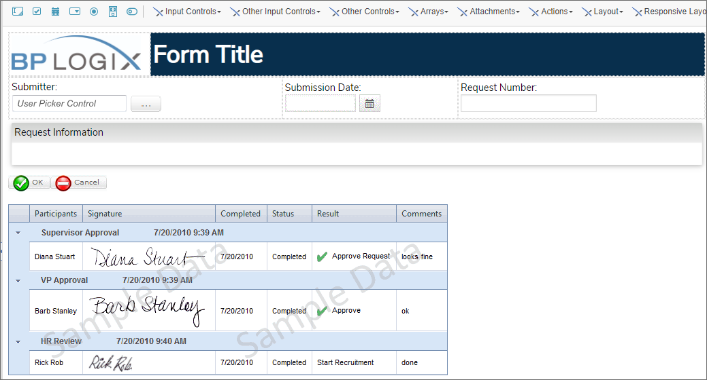
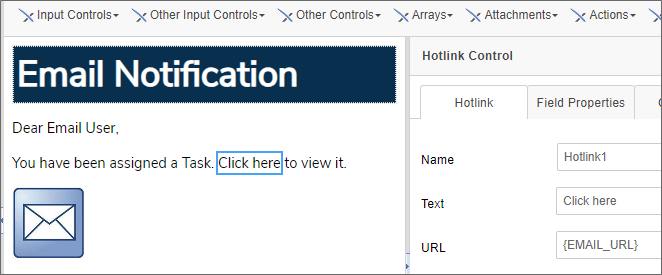

In Process Director, the [Template Library] folder contains some pre-built application templates for specific types of request. As discussed in the Template Library topic of the Implementer's Guide, this folder can also be used to create your own application templates. One of the first templates you might wish to make, therefore, is a generic application template, or application stub, that contains the basic application objects you might need for creating any new application.
Creating an application stub enables you to implement universal application items that you might want to see on all of your organization's applications, such as:
One of the key benefits of having an application stub is that it enables you to skip the largely tedious process of creating the same application objects from scratch every time you want to create a new application.
In this topic, we'll describe the process for making a universal application stub that can be used as the starting point for any new application you create. We'll cover the following steps:
We'll start with creating the application folder.
In the [Template Library] folder of your Process Director installation, there are several subfolders, each of which contains an entire template application, such as the Checklist Request or IT Request applications. By design, the top-level subfolders of the [Template Library] folder are automatically considered to be the parent folders of an application. So, we'll need to create a new subfolder in the [Template Library] folder. In this example we'll create a subfolder named Application.
We'll call this folder Application because, when you create a new application with this template, you'll be asked to provide a name that will be prepended to the word "Application" as the name of the new application you'll create. So, if you provide the name "Mobile Device Issue", the new application created from this template will be placed in an application folder named Mobile Device Issue Application. Similarly, the value you provided will be prepended to all of the object names—though not to subfolder names—that exist in the application folder, so we'll provide similarly generic named for or Form, Process Timeline, etc., when we create them.
So, to create the application template folder, navigate to the [Template Library] folder, then select Folder from the Create New menu. The Create Folder screen will appear, and in the Folder Name property, enter the word "Application", then click the OK button. The new folder will be created, and you'll navigate to it automatically.
You'll want to add some customization to the folder, so click the Properties Icon for the folder to open its Properties page. As a Best Practice, you should select the appropriate icon for the folder. You'll probably change the application folder Icon for any new applications you make from this template, so, for now, choose an appropriately generic application icon. Next, you'll need to provide a Description for this application, using text that signifies this is a generic application stub for creating new applications.

Once you're finished, you can click the OK menu button to close the Properties page. You'll automatically navigate back to the [Template Library] folder, where your new Application folder will be displayed.

As a best practice, all objects in a Process Director application should be organized in subfolders of the main Application folder. The specific method of organization depends on your organization's specific needs, but, as a basic rule, different object types, such as Knowledge Views should be grouped together.

In this example, we have several subfolders, each of which is designed to store specific types of object, e.g., a folder for Forms, Business Rules, etc. The specific organizational method you use should, as a best practice, generally follow this example, though the specific organizational method will be up to you. It's important, though, that you impose some sort of logical order on your application's structure, rather than just storing every object at the root of the Application folder. Choose a method of organization that makes sense to you.
In many cases, the example above might be more organized than is necessary, for a couple of reasons. For example, you might dispense with a Business Values folder, since many of your general Business Values will already be stored in a [Business Values] folder at the root of the Partition. Similarly, unless you'll be importing some data that is specific to your application, such as an Excel spreadsheet, the Data folder will be unnecessary for most applications. Indeed, if your applications commonly use only a single form, you might not need a Forms folder either.
On the other hand, you might want to add a Management KViews folder, specifically for storing Knowledge Views for the application that only managers should be allowed to access. In your new application, you could set permissions on this folder to only allow access by specific groups, and let permissions inheritance provide the appropriate permissions for each Knowledge View you create in the Management KViews folder.
Indeed, you might not want to use an object-based method of organization at all, and divide the subfolders by function, and name them Users, Support, Management, etc., placing your application objects in the folder based on their usage. In general, BP Logix believes that object type-based organization is more understandable, but you're free to create the organizational method that works best for your organization. Just remember that all new applications you make will use the organizational method you impose in the template, so think carefully about your choices.
Implement your organizational method by creating the appropriate subfolders in your Application folder, again using the Folder selection of the Create New menu.
As a minimum, you'll need to create three Process Director objects somewhere in the Application folder: A Form, a Process Timeline, and an Email Template. You can create them in the appropriate subfolders, or at the root level of the Application folder. Where you place the three objects is up to you, though a good argument can be made for placing these three objects at the root of the Application folder. Mainly, it's an argument of convenience. As you being building the new application, you'll probably be navigating between the Form and Process Timeline, and perhaps the email template, fairly frequently. Having to navigate between different subfolders all the time could get a bit tedious. For an application with multiple Forms and Process Timelines, it might make sense to place the objects in a Forms or Processes subfolder, but most applications use a single Form and Process Timeline, so it's probably unnecessary to organize the objects so aggressively.
Placing the three base objects at the root folder makes a lot of sense for ease of use.

When we create our objects, using the Create New menu, we'll give them very generic names, as in the example above. i.e., Email Template, Form, and Timeline. Again, we're doing this because when we name our new application at design time, the name will be prepended to the object name, e.g., Mobile Device Issue Form, to use the example we discussed previously.
Once the objects are created, you need to link them.
In the Form, open the Options section of the Properties tab. Set the Automatically start this process after Form is submitted and Timelines Associated with Form properties to the Timeline Process Timeline.

When you're done, close and save the Form definition.
Next, open the Timeline, and open the Options section of its Properties tab. Set the Form for Timeline property to the Form, and the Default Email Template in this Timeline property to Email Template.

When you're done, save and close the Timeline definition.
All of our objects are now linked together in the application template, so we won't have to recreate these settings every time be use it to create a new application.
Depending on your organization's needs, there might be a wide variety of basic configurations you want to implement. You certainly don't want to go overboard here, because we are, after all, creating very generic base objects. On the other hand, and configurations we create here will already be done when we create a new application from this template. Where to draw that line is very much up to you.
What we can do, however, is give you an example of a template application we might use at BP Logix, to give you some ideas to think about as you make the basic configuration you want to apply to all new applications.
Feel free to treat this section as a list of suggestions, rather than instructions.

Our sample process timeline has some basic activities already configured, with their dependencies set:
All of these activities have minimal configuration, and even those may have to be altered for most applications, such as more activities needed, etc. They're just there to provide a very basic set of preconfigured activities to save time when configuring the new application.

In the Online Form Designer , we've added the basic design at the top, to include the BP Logix logo, and the space for the Form's title.
Immediately below that are three fields we place on every Form at BP Logix, all of which are disabled to prevent editing by end users:
These three fields also enable us to configure a default Instantiated Form Name on the Properties tab of the Form definition, which is set to:
Request #{:RequestNumber} from {:Submitter} on {:SubmissionDate}
Next we have an empty Section control, labeled, "Request Information" where we can insert our Form's request fields.
Below that is a Button Area control, followed by a Routing Slip.
This configuration implements both the graphical elements we want on every Form, as well as the basic, standard fields we want to use in every application.

The Email Template, again, has the very basic email message controls needed to send a valid message. Unlike the Form, there's no logo at the top of the template, since Outlook will generally strip images from emails, so it's fairly pointless to include them. There are three controls on the email template:
Status for Request #{:RequestNumber}.Of course, in most applications, this template will require you to add various Form field system variables or other information.
Once we've completed the four configuration steps above, our application stub is ready for use. All we have to do is navigate the location where we desire to create the new application, then select [Start from Template] from the Create New menu, name our new application, then select the Application template to create it.
The new application will contain all of the organization and configuration we implemented in the template. This will save much of the repetitive activity that always goes into creating a new application from scratch, and standardizes the look and feel of our Forms and email notifications.